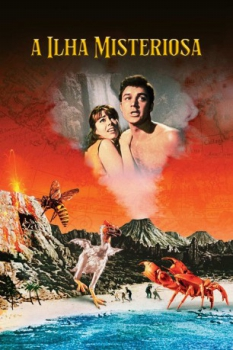

A Ilha Misteriosa (1961)


A world beyond imagination! Adventure beyond belief!

Avaliação (TMDb):


6.4/10 (95 votos)
Avaliação (Usuário):
Outro Título:Mysterious Island (Título Original)
País:United Kingdom, 101 minutos
Idiomas falados:Inglês
Gênero(s):Aventura, Família, Fantasia, Sci-Fi
Diretor(s):Cy Endfield
Codec:MPEG-2 (DVD)
Número: 272
Sinopse:
Durante a Guerra Civil Americana, prisioneiros de guerra da União escapam em um balão e vão parar em uma remota ilha do Pacífico habitada por plantas e animais gigantes. Sequência de "20 Mil Léguas Submarinas".
Elenco:
Michael Craig, Joan Greenwood, Michael Callan, Gary Merrill, Herbert Lom, Beth Rogan, Percy Herbert, Dan Jackson
Tipo de mídia: DVD5,
Legendas: Inglês, Português
Alugado: Não
Tela: 1.85:1